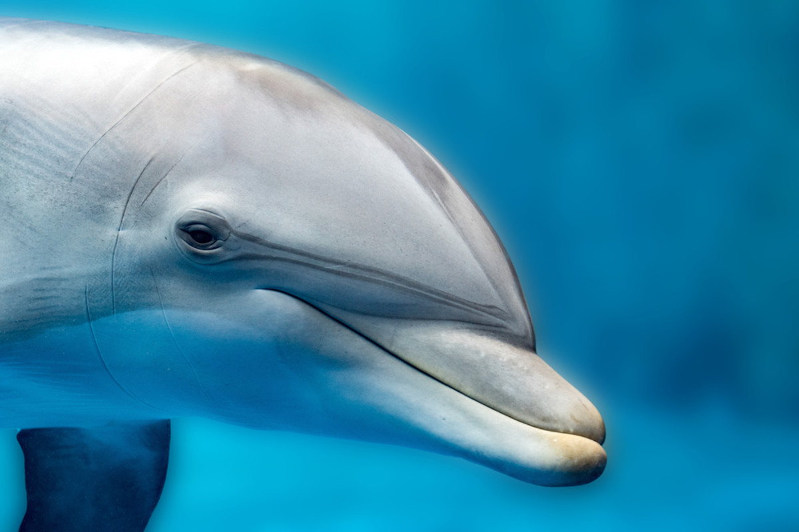
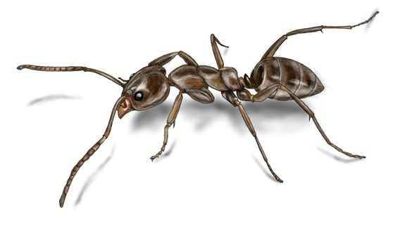
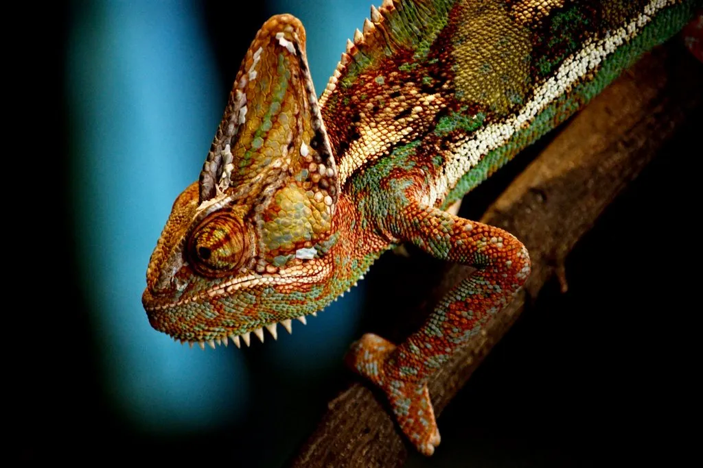

The Intelligence of Dolphins

Dolphins are considered one of the most intelligent animals in the world. Scientists have studied
their behavior for decades and discovered that they can solve complex problems, understand symbols,
and even learn basic forms of language. Their brains are highly developed, especially in areas
related to emotions and social interaction.
One of the most fascinating abilities of dolphins is their communication system. They use a variety
of clicks, whistles, and body movements to communicate with each other. Each dolphin even has its
own unique "signature whistle," almost like a name, which helps them recognize one another in the
ocean.
Dolphins are also known for their teamwork. When hunting, they coordinate with each other to trap
fish into tight groups, making them easier to catch. In some cases, they even cooperate with humans,
helping fishermen guide fish toward their nets.
Another amazing fact is that dolphins can recognize themselves in mirrors, which is a sign of
self-awareness — a rare ability shared with humans, elephants, and a few other species. This shows
that dolphins are not only smart but also highly conscious animals.
Why Cats Sleep So Much
Cats are known for their love of sleep, often resting between 12 and 16 hours a day. This behavior
might seem lazy, but it actually comes from their wild ancestry. In the wild, cats needed a lot of
energy for hunting, so they developed the habit of conserving energy by sleeping for long periods.
Even domestic cats still follow this natural instinct. Although they don't need to hunt for survival
anymore, their bodies are still designed for short bursts of high energy activity. This is why your
cat may suddenly run around the house after waking up — it’s acting on its hunting instincts.
Cats also have different sleep cycles compared to humans. They spend a lot of time in light sleep,
which allows them to wake up quickly if needed. This is a survival mechanism that helped them stay
alert to danger in the wild.
Interestingly, kittens and older cats tend to sleep even more than adult cats. Sleep helps kittens
grow and develop, while older cats need more rest to maintain their health. So next time you see a
cat sleeping all day, remember — it's completely natural!
The Incredible Strength of Ants

Ants may be small, but they are among the strongest creatures on Earth relative to their size. Some
species can lift objects that are up to 50 times heavier than their own body weight. This would be
like a human lifting a car!
Their strength comes from their body structure. Because ants are so small, their muscles are more
efficient relative to their size. This allows them to perform tasks that seem impossible for larger
animals.
Ants are also excellent team players. They live in highly organized colonies where each ant has a
specific role, such as worker, soldier, or queen. When faced with a challenge, ants work together to
achieve their goal, whether it's carrying food, building their nest, or defending their colony.
Communication between ants is another fascinating aspect of their behavior. They use chemical
signals called pheromones to send messages to each other. For example, when an ant finds food, it
leaves a scent trail that guides other ants to the same location.
Masters of Camouflage

Camouflage is one of the most powerful survival strategies in the animal kingdom. It allows animals
to blend into their surroundings, making it difficult for predators to see them — or for prey to
escape them.
Chameleons are famous for their ability to change color, but this is not only for hiding. They also
change color to communicate with other chameleons and to regulate their body temperature. Their skin
contains special cells that reflect light differently, creating a wide range of colors.
Many other animals use camouflage as well. For example, some insects look like leaves or sticks,
while certain fish can blend perfectly with coral reefs. This natural disguise helps them survive in
environments full of danger.
Camouflage is not just about color — it can also involve patterns, shapes, and even behavior. Some
animals stay completely still to avoid detection, while others move in ways that mimic their
surroundings. Nature has developed incredible ways to protect its creatures.